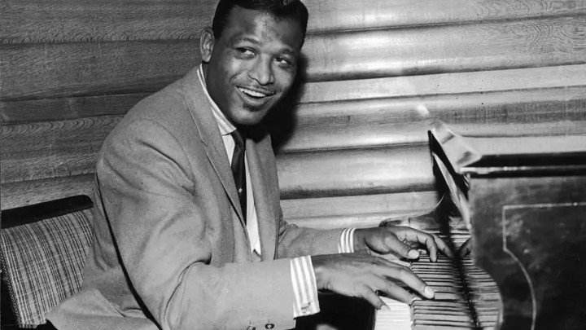
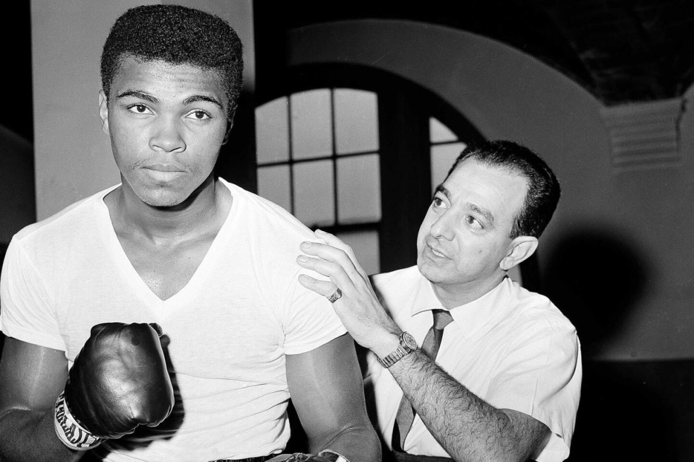

boks // poznate licnosti
Sugar Ray Robinson
Sugar Ray Robinson (1921–1989) bio je američki bokser, često smatran jednim od najboljih svih vremena. Osvojio je titule u velter i srednjoj kategoriji, a njegova izuzetna tehnika, brzina i snaga postavili su standarde u boksu. Imao je profesionalni skor od 173 pobede, 19 poraza i 6 nerešenih borbi, uz 109 nokauta. Bio je poznat po svom izuzetnom ringu inteligencijom i atraktivnom stilu borbe. Njegov uticaj na sport i dalje se oseća, a mnogi ga smatraju najvećim bokserom u istoriji.
Muhammad Ali
Muhammad Ali (1942–2016) bio je legendarni američki bokser i jedan od najuticajnijih sportista svih vremena. Rođen kao Cassius Clay, osvojio je zlato na Olimpijskim igrama 1960. i postao trostruki svetski prvak u teškoj kategoriji. Poznat po svom jedinstvenom stilu borbe – „Letim kao leptir, bodem kao pčela“ – bio je izuzetno brz, spretan i inteligentan u ringu.
Henry Armstrong
Henry Armstrong (1912–1988) bio je legendarni američki bokser i jedan od najvećih boraca svih vremena. Jedini je bokser u istoriji koji je istovremeno držao titule u tri različite težinske kategorije – pero, lakoj i velter kategoriji. Tokom karijere ostvario je 151 pobedu (101 nokautom), 21 poraz i 9 nerešenih borbi.